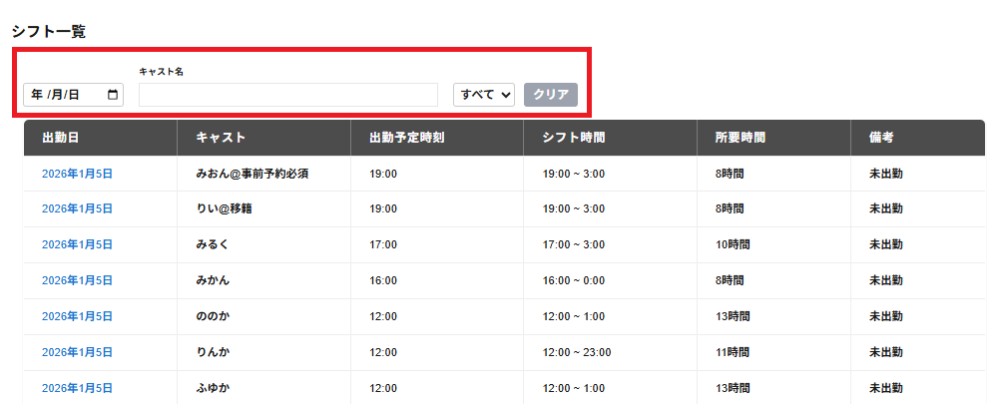

シフト一覧の一覧の上に以下の操作項目が表示されます。
・年/月/日、キャスト名、欠勤・未出勤(セレクトボックス)にて一覧を絞り込むことができます。
※すべて併用して絞り込むことができます。
・年/月/日
年/月/日をクリックし、任意の年月日を選択すると、選択した年/月/日のシフト一覧のみが表示されます。
・キャスト名
キャスト名を入力すると、入力した文字を含むキャストのシフト一覧のみが表示されます。
・欠勤・未出勤(セレクトボックス)
欠勤・未出勤(セレクトボックス、初期値はすべて)をクリックすると、すべて・欠勤・未出勤を選択できます。
すべてを選択した場合はすべてのシフトが一覧で表示されます。
欠勤を選択した場合は欠勤をしたシフトのみが一覧で表示されます。
未出勤を選択した場合は出勤していないシフトが一覧で表示されます。
・クリア
年 /月/日・キャスト名・欠勤・未出勤(セレクトボックス)の絞込みをすべて解除できます。
